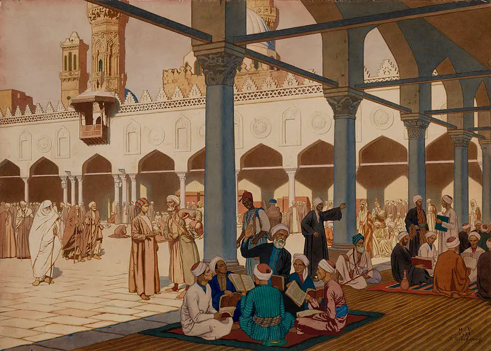
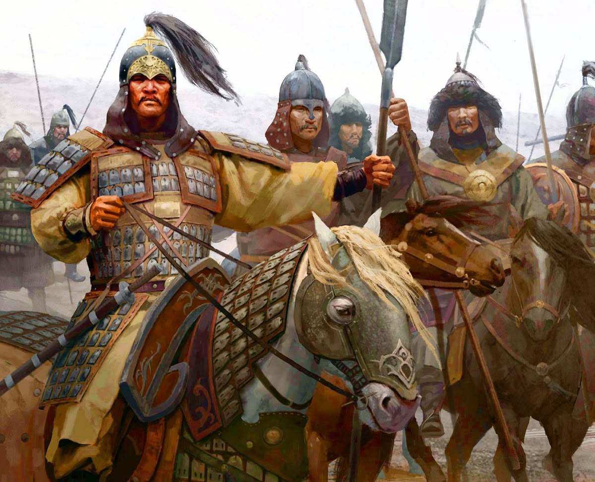
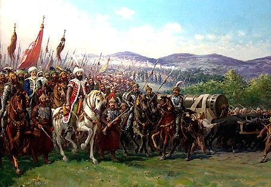

| Early Middle Ages | High Middle Ages | Late Middle Ages |
|---|---|---|
| 500-1000 | 1000-1350 | 1350-1500 |
|  Conventionally dated roughly around the fall of the western RomanEmpire began a new era more distant to the culture, technology and society of ancient times. A large portion of Europe began a period of decline and less technological sophistication as compared to its ancient civilisation, often regarded as 'The European Dark Ages', but elsewhere like in the rising Islamic world of the 7th century, science and technology flourished, leading to the'Islamic Golden Age'. China had also seen its Golden Age in the Tang dynasty seeing cosmopolitan culture, economic prosperity and artistic achievement. This began a period of Asian and North African dominance in society. |
 During the High Middle Ages, several conquests and societaldevelopments were seen across the world. The Crusades reshaped contemporary warfare, especially when tied to religion, and the Mongol invasions led to a new player in global influence, the Mongol Empire, stretching from East Asia, the Middle East, to Eastern Europe. Europe began a slow re-emergence with more centralisation, urbanisation and sophisticated architecture, but still fell behind the large-scale and dominating Mongol world. Outside Eurasia, Sub-Saharan Africa birthed The Mali Empire, connecting it to the Islamic world and Mississippians of North America built complex trading networks stretching to Mesoamerica. |
 Following the Black Death, the Mongol Empire began itsdecline. Populations were decimated in various parts of the world. After post plague recovery, empires like the Ottoman and Timurid also rose during this time, controlling vital trade routes and locations, along with holding great military power. The Renaissance and invention of the printing press saw a new era for Europe and gradual technological increase, partly due to labour shortages from the Black Death leading to the end of feudalism and resurgence of old philosophies. |